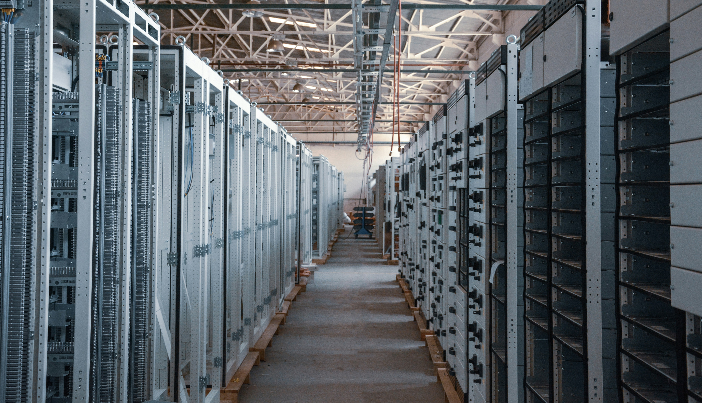
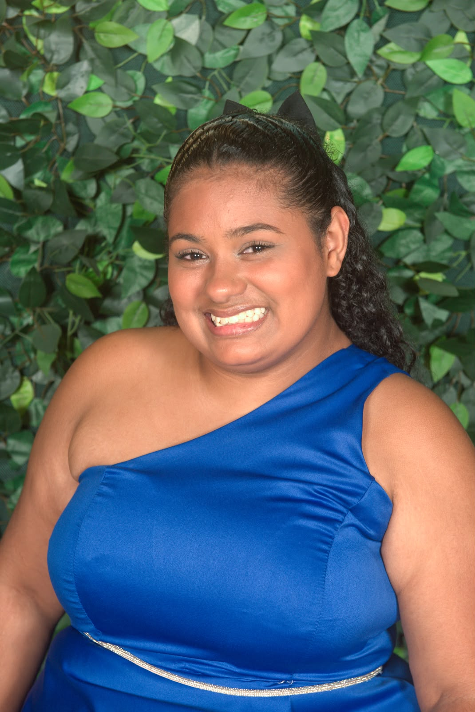
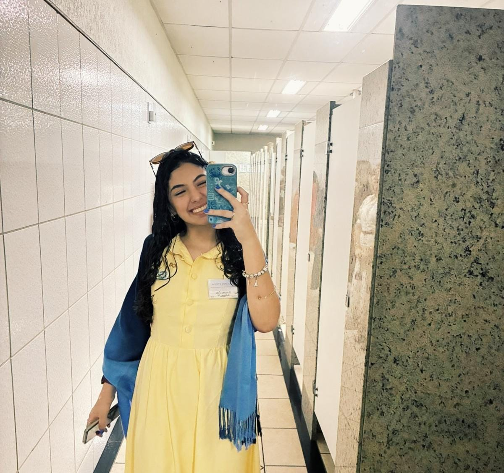
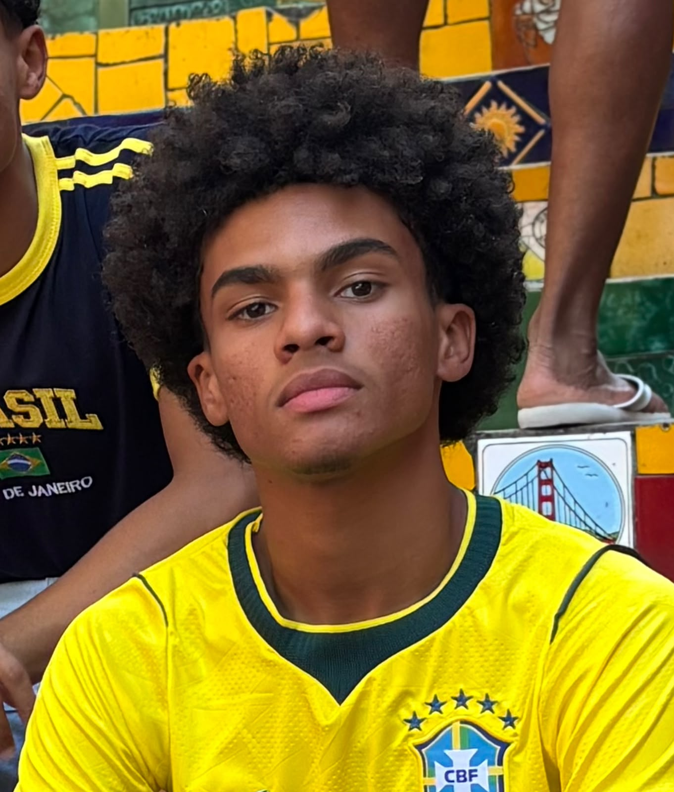

Nossa Missão
Nosso grupo escolheu abordar o consumo de água relacionado à inteligência artificial porque essa tecnologia está cada vez mais presente em nossas vidas, mas seus impactos ambientais ainda são pouco conhecidos por muitas pessoas. Acreditamos que, para utilizar a tecnologia de forma consciente, também precisamos compreender os recursos naturais envolvidos em seu funcionamento.
Com este projeto, queremos despertar a curiosidade e incentivar a reflexão sobre como o desenvolvimento e o uso da inteligência artificial se relacionam com a preservação da água. Nosso objetivo é levar informação às pessoas, mostrando que a inovação tecnológica também precisa caminhar junto com a responsabilidade ambiental.
Esperamos que nosso trabalho contribua para ampliar a conscientização sobre esse tema e incentive os usuários a refletirem sobre suas escolhas e responsabilidades. Afinal, construir um futuro tecnológico também significa pensar no futuro do planeta.
Conhecer para transformar
Queremos contribuir para que mais pessoas compreendam a relação entre inteligência artificial, consumo de água e preservação dos recursos naturais.
Por que falar sobre esse assunto é tão importante?
A inteligência artificial está cada vez mais presente em nossas vidas, facilitando tarefas, auxiliando nos estudos e transformando a tecnologia. Porém, por trás de toda essa inovação, existe um impacto ambiental que nem sempre recebe a devida atenção: o consumo de água.
Falar sobre esse assunto é importante para compreender que o avanço tecnológico também traz responsabilidades ambientais. Afinal, desenvolver novas tecnologias não deve significar ignorar os recursos naturais dos quais dependemos. A inovação só representa um verdadeiro avanço quando também considera a preservação do planeta.

Quem está por trás do projeto?
Este projeto foi desenvolvido por:
Geovanna Vital

Programadora
Marina Matos

Programadora
Maria Eduarda Lira

Mídias, Design e Roteirista
Giovanna Fernandes

Programadora
Rhuan Fonseca

Programador
Luis Felipe Moreno

Programador